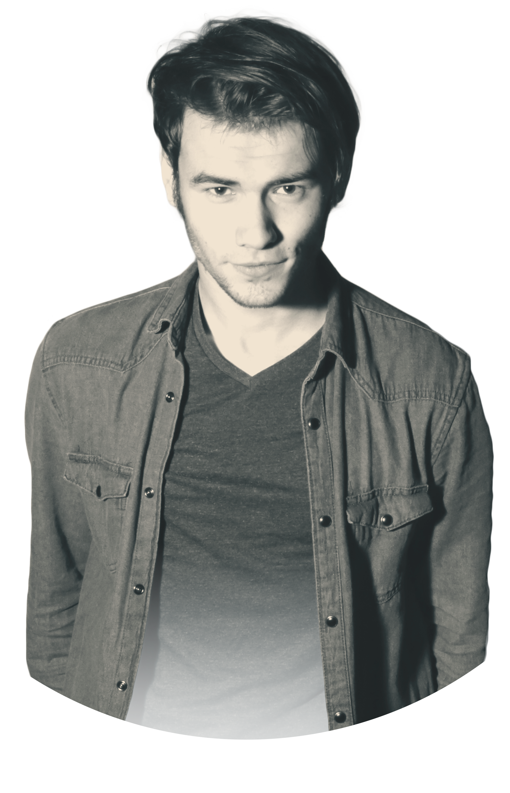
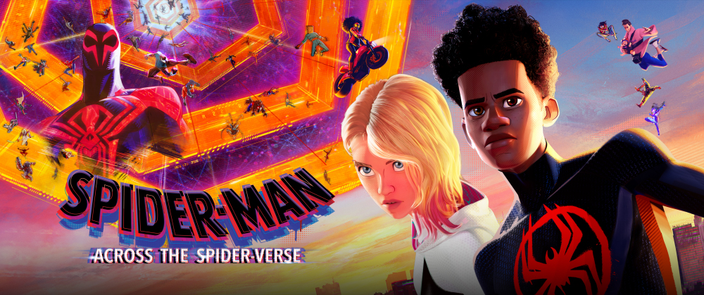
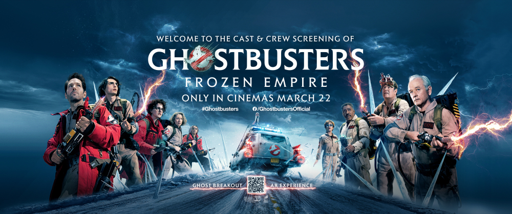
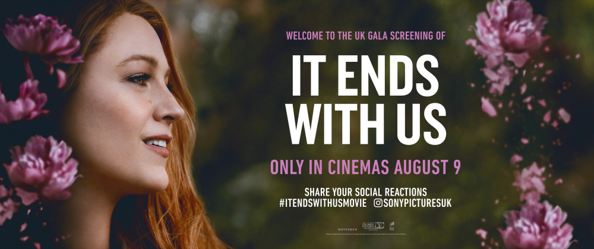

ABOUT
Hi, I’m Callum Lewis, a freelance VFX and motion graphics artist based in Cornwall, UK. I've been creating visual effects and motion graphics since my teenage years, developing a deep love for cinematic visuals and storytelling through digital craft.
I hold a First-Class BA (Hons) in Animation and Visual Effects from Falmouth University, where my work gained industry recognition and opened the door to my professional career. Since then, I’ve spent over six years freelancing across the film, TV, and tech industries, working on more than 200 projects for clients including Netflix, Amazon Prime, Universal, and other major studios.
My skillset spans compositing, motion graphics and general design and I’m always exploring new tools and workflows to push what I can bring to a project.
While I’ve collaborated with teams across the UK and internationally, I work independently from Cornwall, driven by the goal to help studios and storytellers bring their ideas to life, whether that’s for a blockbuster campaign or a passion project.
There’s no job too small, just creative challenges waiting to be solved.

WORK
Over the years I’ve contributed to over 200 professional projects across film, TV, music, tech, and social, providing everything from invisible VFX to full-motion graphic packages. My experience includes working with household names like Universal, Amazon Prime, Netflix, and Sony but I’m equally passionate about helping indie filmmakers, musicians, and creators bring their visions to life.
Studios I've had the pleasure of working with and for:

Below is a breakdown of the core services I offer. Whether you’re producing a feature, making a music video, or just need a title card animated for social, I’m here to help.
MOTION GRAPHICS
I've created graphics packages for major productions, including over 40 social spots for No Time To Die, and contributed animated titles and trailer cards to feature films and streaming campaigns. I’m equally happy crafting logo stings, stream overlays, or quick social loops for smaller clients.
VISUAL EFFECTS
Latest showreel under construction
One of my largest projects involved creating 25 VFX shots for an internal campaign (in just 17 days!) to celebrate the international release of The Flash (2023). I’ve also worked on music videos for Trivium and The Amity Affliction, producing elements like dragons, muzzle flashes, and dimensional portals to help the director achieve their vision from concept art to final comp.
My goal is to help achieve a creative vision that may seem impossible to reach, even for smaller clients.
DESIGN
While motion is my main focus, I also offer graphic design services with a cinematic edge. I’ve reworked key art for Sony premiere screenings, created logos for indie teams, and designed title treatments for studios like Altitude.



My compositing background gives me a strong eye for balance, polish, and visual storytelling — making me well-suited to tackle things like poster design, film titles, or visual assets for pitch decks and social campaigns.